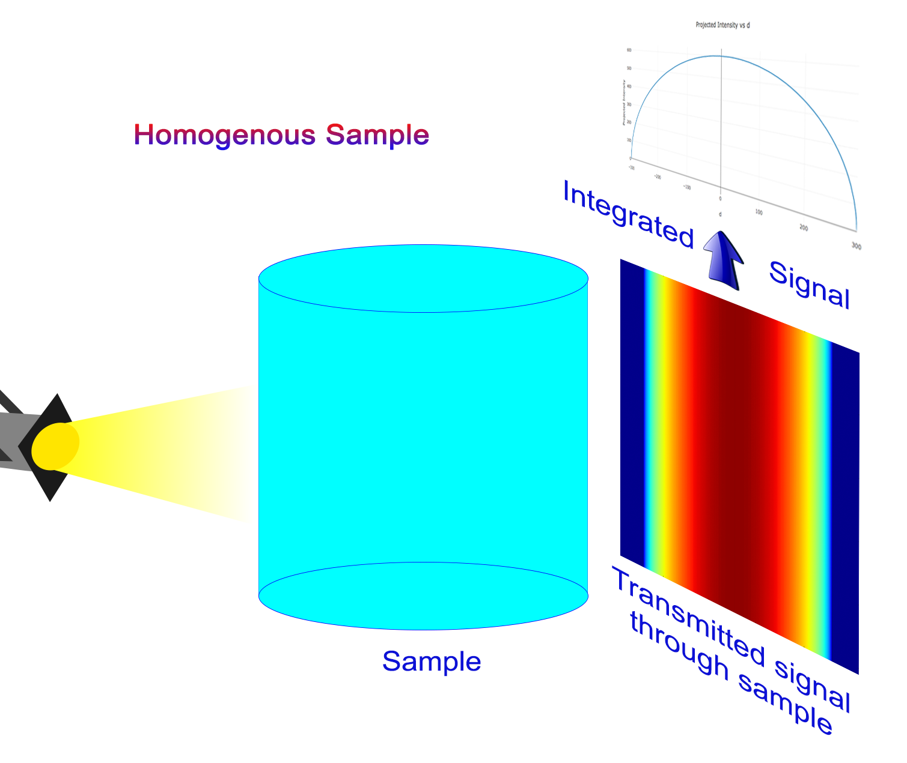
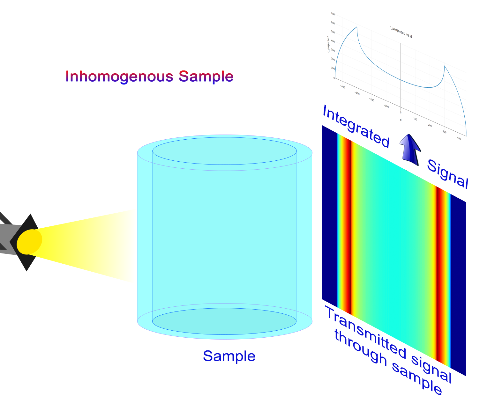
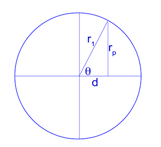
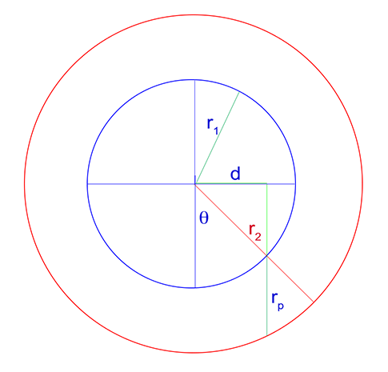

Introduction¶
This library has been created to remove the non constant thickness effect of a cylinder sample placed in our neutron (works also for X-ray) beam. For such sample, the transmission signal will be much higher on the edge compare to the center of the sample. Post analysis of such sample is then very challenging. This library creates a new image corresponding to a sample of constant thickness. Thickness being the diameter of the original sample.
Principle¶
Any homegenous cylindrical sample placed in a beam (neutron for example) will show a much higher transmission signal near the edge seen by the beam, compare to the center. This is simply due to the fact that the beam has to go through more material at the center compare to the side.
ATTENTION This library only works with cylinder placed in the vertical position!
The following figure illustrate the experimental set up and the signal measure for an homogeneous and inhomogeneous sample
In order to correctly analyze data for those samples, one must cancel this cylindrical effect by “making” the sample flat related to the direction of the beam.
The user needs to specify the position of the center as well as the radius of the cylinder. The program will then produce an image corresponding to the same sample as if it was rectangular.
Such samples are called homogeneous because they are made of only one uniform and homogeneous material.
But program also work with inhomogenous sample for which the cylinder is hollow such as shown here.
Program works the same way, user needs to specify center, inner and outer radius of material sample.
In order to run, the program only requires the user to define
- the center of the cylinder(s)
- the radius(dii) of the cylinder(s)
Algorithm¶
Homogeous Cylinder¶
Let’s consider a cylinder of radius r1 center around the x-axis.
the neutron beam is hitting the sample from the bottom side. The goal of the algorithm is to evaluate the effective thickness of the sample (2*rp) exposed to the beam. Once we know this thickness, we can correct for it in the final calculation to make the sample “flat”.
we can then define the correction factor as such
if d == 0: # center of the cylinder
factor = 1
else:
factor = (2 * r) / r_p
Inhomogeous Cylinder¶
In this case, we have a hollow cylinder. Inner radius is r1 and outer radius is r2. Once again, we consider the cylinder being center around the x-axis and beam is coming from the bottom.
Just like the homogenous case, we need to calculate the effective sample thickness (2*rp) exposed to the beam.
if np.abs(_d)>=r2:
rp = 0
elif (np.abs(_d)>=r1) and (np.abs(_d)<=r2):
rp = 2*r2*np.sin(np.arccos(_d/r2))
else:
rp1 = 2*r1*np.sin(np.arccos(_d/r1))
rp2 = 2*r2*np.sin(np.arccos(_d/r2))
rp = rp2 - rp1
and then the correction factor is defined as
if d == 0:
factor = 1
return
if rp == 0:
_value = np.NaN
factor = (2*(r2-r1)/rp)